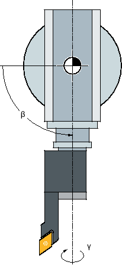

In der Simulation wird das aktuelle Programm vollständig berechnet und das Ergebnis grafisch dargestellt. Ohne die Maschinenachsen zu verfahren, wird so das Ergebnis der Programmierung kontrolliert. Falsch programmierte Bearbeitungsschritte werden frühzeitig erkannt und Fehlbearbeitungen am Werkstück verhindert.
Grafische Darstellung
Die Simulation verwendet zur Darstellung am Bildschirm die richtigen Proportionen des Werkstücks, der Werkzeuge, des Futters, der Gegenspindel und des Reitstocks.
Für das Spindelfutter und den Reitstock werden die Abmessungen verwendet, die im Fenster "Spindelfutterdaten" eingegeben sind.
Für nichtzylindrische Rohteile schließt das Futter bis zum Umkreis des Quaders bzw. des Mehrkants.
Tiefendarstellung
Die Tiefenzustellung wird als Farbabstufung dargestellt. Die Tiefendarstellung zeigt das Tiefenniveau, in dem sich die Bearbeitung momentan befindet. Für die Tiefendarstellung gilt: "je tiefer, desto dunkler".
Rohteildefinition
Für das Werkstück werden die Rohteilabmessungen verwendet, die im Programmeditor eingegeben werden.
Das Rohteil wird mit Bezug auf das Koordinatensystem eingespannt, das zum Zeitpunkt der Rohteildefinition gültig ist. Vor der Rohteildefinition in G-Code-Programmen müssen also die gewünschten Ausgangsbedingungen hergestellt werden, z. B. durch Anwahl einer geeigneten Nullpunktverschiebung.
Rohteilprogrammierung (Beispiel)
G54 G17 G90WORKPIECE(,,,"Zylinder",112,0,-50,-80,00,155,100)T="NC-ANBOHRER_D16
MKS-Bezüge
Die Simulation ist als Werkstücksimulation ausgelegt, d. h. es wird nicht vorausgesetzt, dass die Nullpunktverschiebung schon exakt angekratzt oder bestimmt sein muss. Dennoch gibt es in der Programmierung unvermeidbare MKS-Bezüge, wie etwa der Werkzeugwechselpunkt im MKS, die Parkposition bei Gegenspindel im MKS oder die Position des Gegenspindelschlittens. Diese MKS-Bezüge könnten je nach aktueller Nullpunktverschiebung in ungünstigen Fällen dazu führen, dass in der Simulation Kollisionen gezeigt werden, die bei einer realistischen Nullpunktverschiebung nicht auftreten würden, oder umgekehrt Kollisionen nicht dargestellt werden, die bei einer realistischen Nullpunktverschiebung auftreten würden. Deshalb berechnet in ShopTurn-Programmen der Programmkopf im Falle der Simulation für Sie aus den angegebenen Futterabmessungen eine passende Nullpunktverschiebung für die Hauptspindel oder ggf. auch für die Gegenspindel.
Programmierbare Frames
Bei der Simulation werden alle Frames und Nullpunktverschiebungen berücksichtigt.
| Hinweis |
Manuell geschwenkte AchsenBeachten Sie, dass Schwenks in der Simulation und beim Mitzeichnen auch dargestellt werden, wenn die Achsen beim Start manuell geschwenkt sind. |
Darstellung der Verfahrwege
Die Verfahrwege des Werkzeugs werden farbig dargestellt. Eilgang rot und Vorschub grün.
| Hinweis |
Darstellung des ReitstocksDer Reitstock ist nur mit der Option "ShopMill/ShopTurn" sichtbar. |
| | Maschinenhersteller Beachten Sie hierzu die Angaben des Maschinenherstellers. |
Simulationsdarstellung
Sie haben die Wahl zwischen folgenden Darstellungsarten:
Abtragssimulation
Bei der Simulation bzw. beim Mitzeichnen verfolgen Sie direkt den Spanabtrag vom definierten Rohteil.
Bahndarstellung
Sie haben die Möglichkeit, zusätzlich eine Bahndarstellung einzublenden. Dabei wird die programmierte Werkzeugbahn dargestellt.
Hinweis Werkzeugdarstellung in der Simulation und bei Mitzeichnen
Damit eine Werkstücksimulation auch mit nicht vermessenen oder unvollständig eingegebenen Werkzeugen möglich ist, werden bestimmte Annahmen zur Werkzeuggeometrie gemacht.
Die Länge eines Fräsers oder Bohrers wird beispielsweise auf einen Wert proportional zum Werkzeugradius gesetzt, damit ein Abtrag simuliert werden kann.
Hinweis Ungenaue Darstellung bei Werkzeugen mit großen Radien
Die Darstellung der Werkzeugschneide ist abhängig von dem in den Werkzeugparametern eingestellten Radius. Je größer der Radius, umso abgerundeter wird die Schneide in der Simulation dargestellt und desto weiter ist der Verfahrweg (= Mittelpunktsbahn) von der bearbeiteten Kontur entfernt.
Auf Grund dieser Ungenauigkeiten bei der grafischen Darstellung kann in der Simulation der Eindruck entstehen, dass bei der Bearbeitung kein Material abgetragen wird.
Hinweis Keine Darstellung der Gewindegänge
Bei Gewinde- und Bohrgewindefräsen werden in der Simulation und beim Mitzeichnen die Gewindegänge nicht dargestellt.
Darstellungsvarianten
Sie können bei der grafischen Darstellung zwischen drei Varianten wählen:
Simulieren vor der Bearbeitung des Werkstücks
Vor der Bearbeitung des Werkstücks an der Maschine können Sie die Abarbeitung des Programms im Schnelldurchlauf grafisch am Bildschirm darstellen.
Mitzeichnen vor der Bearbeitung des Werkstücks
Vor der Bearbeitung des Werkstücks an der Maschine können Sie die Abarbeitung des Programms mit Programmtest und Probelauf-Vorschub grafisch am Bildschirm darstellen. Die Maschinenachsen bewegen sich dabei nicht, wenn Sie "keine Achsbewegung" angewählt haben.
Mitzeichnen während der Bearbeitung des Werkstücks
Während das Programm an der Maschine abgearbeitet wird, können Sie die Bearbeitung des Werkstücks auch am Bildschirm mitverfolgen.
Ansichten
Bei allen drei Varianten stehen Ihnen folgende Ansichten zur Verfügung:
Seitenansicht
Halbschnitt
Stirnansicht
3D-Ansicht
2 Fenster
| Hinweis |
Simulation in Halbschnitt-AnsichtIn der Simulation dient die Ansicht "Halbschnitt" zur genaueren Betrachtung von Innen-Drehbearbeitungen. Diese Ansicht ist nicht zur Betrachtung von Fräsbearbeitungen konzipiert. Die Anzeige von Fräsbearbeitungen kann hierbei zu hohen Simulationszeiten führen. |
Statusanzeige
Die aktuellen Achskoordinaten, der Override, das aktuelle Werkzeug mit Schneide, der aktuelle Programmsatz, der Vorschub und die Bearbeitungszeit werden angezeigt.
In allen Ansichten läuft während der grafischen Abarbeitung eine Uhr mit. Die Bearbeitungszeit wird in Stunden, Minuten und Sekunden angezeigt. Sie entspricht annähernd der Zeit, die das Programm für die Abarbeitung inklusive der Werkzeugwechsel benötigt.
| | Software-Optionen Für die 3D-Ansicht benötigen Sie die Option "3D-Simulation des Fertigteils". Für die Funktion "Mitzeichnen" benötigen Sie die Option "Mitzeichnen (Echtzeitsimulation)". |
Ermittlung der Programmlaufzeit
Beim Durchlauf der Simulation wird die Programmlaufzeit ermittelt. Die Programmlaufzeit wird im Editor temporär am Programmende angezeigt.
Modellqualität
Die Abarbeitungsgeschwindigkeit und Gesamtdauer eines Programms in der Simulation hängt teilweise mit der Qualität und der Komplexität des verwendeten Modells zusammen. Durch eine Reduktion der optischen Qualität kann unter Umständen eine geringere Simulationsdauer erreicht werden. Sie können die Modellqualität für die Simulation entsprechend Ihren Anforderungen in der Oberfläche einstellen.
Folgende Tabelle zeigt, welche Modellqualität-Optionen in Abhängigkeit mit der SINUMERIK ONE-Ausprägung verfügbar ist:
SINUMERIK ONE-Ausprägung | Verfügbare Optionen |
|---|---|
SINUMERIK Operate auf NCU 1740 |
|
SINUMERIK Operate auf NCU 1750 |
|
SINUMERIK Operate auf NCU 1760 |
|
SINUMERIK Operate auf IPC |
|
Eigenschaften von Mitzeichnen und Simulation
Verfahrwege
Bei der Simulation werden die angezeigten Verfahrwege in einem Ringpuffer gespeichert. Wenn dieser Puffer voll ist, wird mit jedem neuen Verfahrweg der älteste Verfahrweg gelöscht.
Optimierte Darstellung
Wenn die Simulationsbearbeitung angehalten oder abgeschlossen wurde, wird die Darstellung noch einmal in ein hochauflösendes Bild umgerechnet. In einigen Fällen ist dies nicht möglich. In diesem Fall erhalten Sie die Meldung: "Hochauflösendes Bild kann nicht erzeugt werden".
Arbeitsraumbegrenzung
In der Werkstücksimulation sind keine Arbeitsraumbegrenzungen und Software-Endschalter wirksam.
Startposition bei Simulation und Mitzeichnen
Bei der Simulation wird die Startposition über die Nullpunktverschiebung auf das Werkstückkoordinatensystem umgerechnet.
Das Mitzeichnen startet auf der Position, auf der die Maschine sich gerade befindet.
Einschränkung
Referenzieren: G74 aus einem Programmablauf funktioniert nicht.
Der Alarm 15110 "Satz REORG nicht möglich" wird nicht angezeigt.
Compilezyklen werden nur teilweise unterstützt.
Keine PLC-Unterstützung.
Keine Unterstützung von Achscontainern.
Es werden keine Schwenktische mit nicht verschwindenden Offsetvektoren unterstützt.
Randbedingungen
Alle vorhandenen Datensätze (Toolcarrier / TRAORI, TRANSMIT, TRACYL) werden ausgewertet und müssen für eine korrekte Simulation richtig in Betrieb genommen sein.
Transformationen mit geschwenkter Linearachse (TRAORI 64 - 69) sowie OEM-Transformationen (TRAORI 4096 - 4098) werden nicht unterstützt.
Änderungen an Toolcarrier- oder Transformations-Daten werden erst nach Power On wirksam.
Transformationswechsel und Schwenkdatensatzwechsel werden unterstützt. Nicht unterstützt werden jedoch echte Kinematikwechsel, bei denen ein Schwenkkopf physikalisch ausgewechselt wird.
Die Simulation von Formenbauprogrammen mit sehr kurzen Satzwechselzeiten kann länger dauern als die Bearbeitung, da die Rechenzeitverteilung bei dieser Anwendung zu Gunsten der Bearbeitung und zu Lasten der Simulation ausgelegt ist.
Beispiel
Ein Beispiel für eine unterstützte Kinematik ist eine Drehmaschine mit B-Achse:
